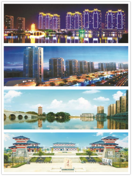
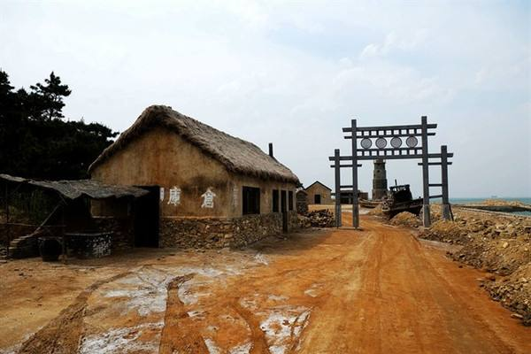
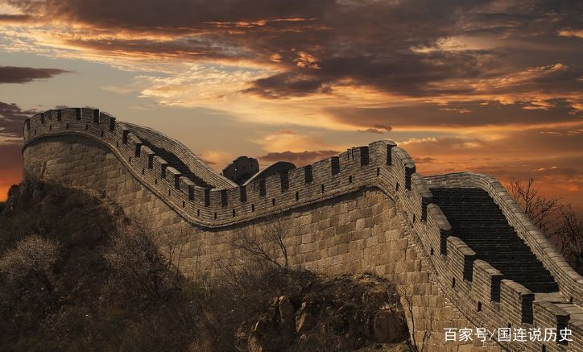
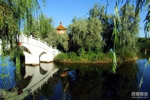
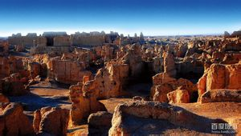
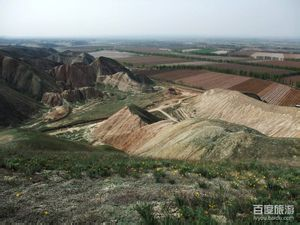

云梦地理：
云梦县，隶属湖北省孝感市，是武汉城市圈重要组成部分，位于湖北省中部偏东、江汉平原东北部，介于东经113°37'～113°52'，北纬30°45'～31°12'之间，面积604平方公里，属副热带季风气候区，截至到2018年，云梦县下辖9镇3乡，常住人口53.68万人（2017年），政府驻地城关镇曲阳路1号。
云梦县地貌形态简单，可统称为平原。全境地势北高南低，高差不大，最高处为境东北的枫梓岗，海拔76.2米，最低处为县东南的北湖垸，海拔19.0米。云梦县属副热带季风气候区过渡性气候带，四季分明。全县年均气温16℃，年均日照量1993.6小时，年均降雨量为1074.5毫米，无霜期年均为247天。 云梦县境内大小河流9条，主要有府河、汉北河两大水系。府河经安陆自云梦县境西北流人并纵贯云梦全县，境内流程54公里。汉北河横穿县南端，流程5.2公里。境内湖泊建国初有27处，面积达27685亩。

历史沿革：
"云梦南来，岷嶓东会，楼前天水苍茫""气蒸云梦泽，波撼岳阳城"......
翻阅诗词典籍，我们会发现"云梦"频繁出现，古代的云梦和如今有何不同呢？云梦历史足迹又是怎样呢？
云梦古时属荆州之城，周为云梦荆州泽，春秋时属郧国，战国时属楚国。云梦古时属荆州之城，周为云梦荆州泽，春秋时属郧国，战国时属楚国。
自秦至魏、晋、南北朝，一直属安陆县。
南北朝西魏大统十六年(公元550年)，分划安陆县南境设置云梦县，县治在云梦城。
北宋熙宁二年(1069年)，省云梦为镇并入安陆县，元佑元年(1086年)，复立云梦县。
宋宣和元年(1119年)升安州为德安府，云梦县隶属德安府
明崇祯十六年(1643年)李自成起义军在湖北建立政权，改云梦县为固州。
清顺治二年(1645年)，清军占领后复立云梦县。

旅游风光：
泅洲寺位于云梦县城南，寺周多为湖沼，常被水环绕。泅洲寺相传系唐代创建。据寺前元代石碑记载，泰定四年(1327年)曾重修。寺庙其主体建筑为大殿，殿前钟楼、鼓楼分列左右，前有山门。大殿为木结构，高9米，面积117平方米，重檐歇山顶，保存较好
楚王城遗址是云梦县一处重要的古城遗址。它坐落在云梦县城关，总占地面积约2. 1平方公里，周长7700米，现存夯土城墙距地表高2.7米左右，城墙内外有护城河，河宽43. 6米，古城总体呈东西长、南北宽不规则长方形，中间一道南北向城垣(中城垣)，将该城一分为二。楚王城遗址遗址于1992年被列为湖北省重点文物保护单位
云梦儒学大成殿位于云梦县城关镇，始建于明洪武年间名先师庙(即儒学大成殿)，现存建筑为清代。云梦儒学大成殿面积260平方米，是县城唯一古代建筑。

文化教育：
截至2011年，全县有影视放映单位18个，艺术表演团体1个，各类文化活动场所48个。县公共图书馆藏书25000多种，档案馆藏档案25000卷(册)。云梦县博物馆有馆藏文物近3000余件，其中国家一级文物18个类别共100多件。云梦县的方言小品《乘凉》获得了湖北省"楚天群星"奖;京胡独奏《楚调新韵》参加了波兰国际民间艺术交流。据不完全统计，云梦流传的民间文艺形式有民歌(含山歌、儿歌、情歌、孝歌、栽秧歌、硪歌、打麦歌等)、皮影、评书、打鼓说书、莲湘、怀鼓舞、蚌精舞、踩高跷、莲湘舞、龙灯、狮子、放荷灯、赛龙舟、跑旱龙船、迎狗老爷等，总共达数十种之多。
全县设有村卫生室(所)165个，聘用乡村医生442人。全县两家县级医院跨入"二甲"行列，7所乡镇卫生院被授予"一甲等卫生院"，五家医院授予"爱婴医院"，县卫生防疫站在全市率先跨入"县级一等防疫站"行列高中教师本科以上学历占72%，云梦县于1995年被省政府授予"初保合格县"称号.截至2011年，全县共有中小学校267所，其中小学231所、初中20所、高中3所，电大1所，公办幼儿园11所。在校学生10.6万人，初中教师专科以上学历占86.1%，小学教师中专以上学历中93.5%，全县小学适龄儿童入学率达100%;初中适龄少年入学率97.3%。

经济辉煌：
2012年，全县完成生产总值151.89亿元，按可比价格计算增长13.0%。其中:第一产业完成增加值28.56亿元，增长4.4%;第二产业完成增加值78.19亿元，增长17.3%;第三产业完成增加值45.14亿元，增长11.1%。三次产业结构由上年的19.1:50.8:30.1调整为18.8:51.5:29.7。在第三产业中，交通仓储及邮电、批发和零售、住宿和餐饮、金融保险、房地产和其他服务业分别增长9.1%、12.5%、8.1%、14.9%、1.7%和17.0%
2012年，全县粮食总产量21.59万吨，增产2.1%;棉花总产量3541吨，增产7.4%;油料总产量1.89万吨，增产6.8%;蔬菜总产量76.05万吨，增产8.5%。全县全年造林面积840公顷，减少17.1%，花卉园艺面积83公顷，增长8.8%。全县生猪出栏45.2万头，增长2.5%，家禽出笼2220万只，增长5.7%;禽蛋产量58912吨，增长0.7%。水产品产量4.75万吨，增长12.8%。全县拥有农机总动力24.98万千瓦，增长6.0%，农机综合水平达77%，比上年提高1个百分点。